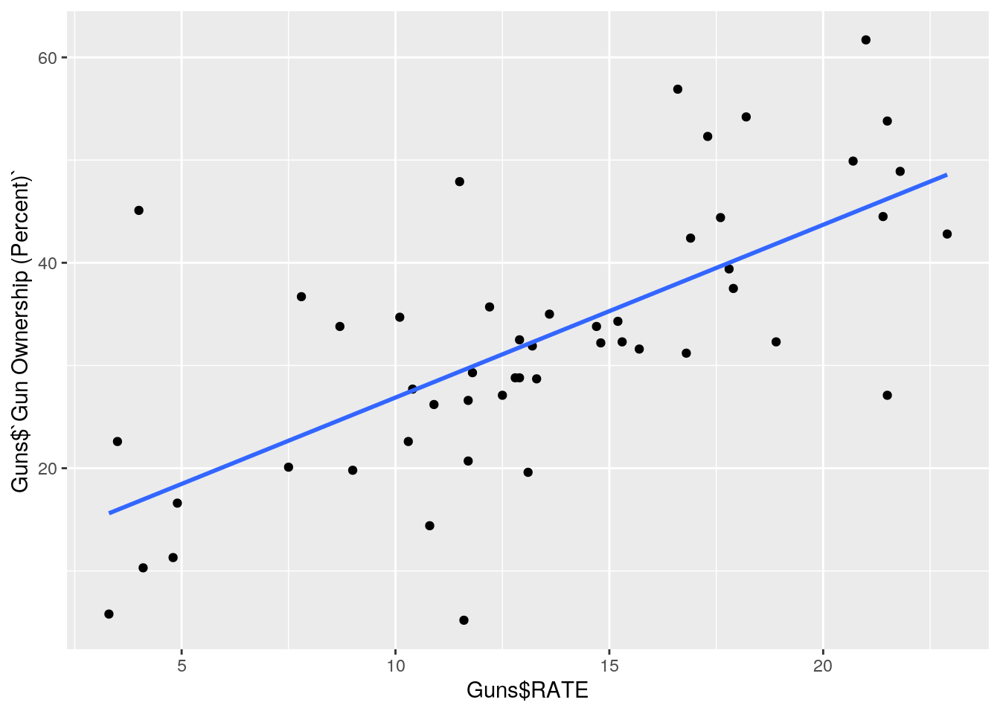

I decided to research the correlation between gun ownership and gun deaths in each state. I have titled the data sets GunMort, GovParty, and GunReg. In GunMort, each state, the number of their
total gun deaths by state, and the number of deaths by gun per 100,000 population by state is listed. This data was collected on the CDC website describing firearm mortality. In GovParty each state and the political party of the governor of each state is listed. This data was aquired on the Governors 2020 Roster
from the National Governors Association. In GunReg, each state, the total number of registered guns by state, and the percentage of adults who own guns is listed. This data was collected on statista.com in the Crime & Law Enforcement sub-section.
library(readr)
library(tidyverse)
library(dplyr)
library(rstatix)
library(sandwich)
library(lmtest)
library(plotROC)
GunMort <- read_csv("FA Mort.csv")
GunReg <- read_csv("GunRegistry by State - Sheet1 (1).csv")
GovParty <- read_csv("Governor's Party Data - Sheet1.csv")
Guns <- GunReg %>% left_join(GunMort) %>% left_join(GovParty)
Guns <- Guns %>% mutate(R_or_D = ifelse(Guns$`Governor's Political Party` ==
"R", 1, 0))
PParty <- Guns$R_or_D
ggplot(Guns, aes(x = Guns$RATE, y = Guns$`Gun Ownership (Percent)`)) +
geom_point(alpha = 0.5) + geom_density_2d(h = 2) +
coord_fixed() + facet_wrap(Guns$R_or_D)man1 <- manova(cbind(Guns$`Gun Ownership (Percent)`,
Guns$RATE) ~ PParty)
summary.aov(man1)## Response 1 :
## Df Sum Sq Mean Sq F value Pr(>F)
## PParty 1 592.9 592.90 3.6696 0.06138 .
## Residuals 48 7755.5 161.57
## ---
## Signif. codes: 0 '***' 0.001 '**' 0.01 '*' 0.05 '.' 0.1 ' ' 1
##
## Response 2 :
## Df Sum Sq Mean Sq F value Pr(>F)
## PParty 1 163.79 163.792 6.728 0.01255 *
## Residuals 48 1168.56 24.345
## ---
## Signif. codes: 0 '***' 0.001 '**' 0.01 '*' 0.05 '.' 0.1 ' ' 1pairwise.t.test(Guns$RATE, Guns$R_or_D, p.adj = "none")##
## Pairwise comparisons using t tests with pooled SD
##
## data: Guns$RATE and Guns$R_or_D
##
## 0
## 1 0.013
##
## P value adjustment method: nonepairwise.t.test(Guns$`Gun Ownership (Percent)`, Guns$R_or_D,
p.adj = "none")##
## Pairwise comparisons using t tests with pooled SD
##
## data: Guns$`Gun Ownership (Percent)` and Guns$R_or_D
##
## 0
## 1 0.061
##
## P value adjustment method: noneI conducted a one-way MANOVA to determine if the political party of a state's government had an effect on the rates of firearm death or gun ownership percentage. Examination of bivariate density plots for each group revealed no stark deparures from multivariate normality. Examination of covariance matrices for each group revealed relative homogeneity. No univariate or multivariate outliers were evident and MANOVA was considered to be an appropriate analysis technique. The overall MANOVA showed a p value of .04375 which triggered follow-up one-way ANOVAs of both variables. Only the death RATE variable showed signifigant correlation with Governor's Party, and after a posthoc t-test the p value was determined to be .013. We conducted 4 tests and after using the bonferroni adjustment our a = .0125. In this case we cannot confirm signifigant correlation between these variables but the test was very close and follow up tests should be conducted.
cor(Guns$RATE, Guns$`Gun Ownership (Percent)`)## [1] 0.6719846LR <- lm(Guns$RATE ~ Guns$`Gun Ownership (Percent)`)
summary(LR)##
## Call:
## lm(formula = Guns$RATE ~ Guns$`Gun Ownership (Percent)`)
##
## Residuals:
## Min 1Q Median 3Q Max
## -12.7490 -1.9387 0.2106 2.3847 9.5831
##
## Coefficients:
## Estimate Std. Error t value Pr(>|t|)
## (Intercept) 4.6418 1.4967 3.101 0.00322 **
## Guns$`Gun Ownership (Percent)` 0.2685 0.0427 6.287 9.14e-08 ***
## ---
## Signif. codes: 0 '***' 0.001 '**' 0.01 '*' 0.05 '.' 0.1 ' ' 1
##
## Residual standard error: 3.902 on 48 degrees of freedom
## Multiple R-squared: 0.4516, Adjusted R-squared: 0.4401
## F-statistic: 39.52 on 1 and 48 DF, p-value: 9.136e-08Guns %>% ggplot(aes(Guns$RATE, Guns$`Gun Ownership (Percent)`)) +
geom_point() + geom_smooth(method = "lm", se = F)
bptest(LR)##
## studentized Breusch-Pagan test
##
## data: LR
## BP = 0.28993, df = 1, p-value = 0.5903coeftest(LR)[, 1:2]## Estimate Std. Error
## (Intercept) 4.6418209 1.49666592
## Guns$`Gun Ownership (Percent)` 0.2684524 0.04270224coeftest(LR, vcov = vcovHC(LR))[, 1:2]## Estimate Std. Error
## (Intercept) 4.6418209 1.46586481
## Guns$`Gun Ownership (Percent)` 0.2684524 0.04376883The coeffecient value suggests that for every .26 unit increase of gun ownership percentage, there is a 1 unit increase in death rate. Assumptions cleared graphically and with a bptest. There was no signifigant change caused by the robust standard errors. As the p value of the interaction between Gun ownership percent and death rate is extremely low , it suggests that there is signifigant interaction between them. My model explains 44% of the variation as that is its r^2 value.
resids <- LR$residuals #save residuals
fitted <- LR$fitted.values #save yhats/predictions
new_resids <- sample(resids, replace = TRUE)
Guns$new_y <- fitted + new_resids
resid_resamp <- replicate(5000, {
new_resids <- sample(resids, replace = TRUE)
Guns$new_y <- fitted + new_resids
LR2 <- lm(Guns$new_y ~ Guns$`Gun Ownership (Percent)`)
coef(LR2)
})
resid_resamp %>% t %>% as.data.frame %>% summarize_all(sd)## (Intercept) Guns$`Gun Ownership (Percent)`
## 1 1.450066 0.04122831The standard errors where pretty comparable, sticking around .41-.43 for all test iterations. Overall, the robust standard errors was the most conserved.
LR3 <- glm(Guns$R_or_D ~ Guns$RATE + Guns$`Gun Ownership (Percent)` +
Guns$`Registered Guns`, family = "binomial")
coeftest(LR3)##
## z test of coefficients:
##
## Estimate Std. Error z value Pr(>|z|)
## (Intercept) -2.1726e+00 1.0259e+00 -2.1177 0.0342 *
## Guns$RATE 1.3361e-01 8.3814e-02 1.5941 0.1109
## Guns$`Gun Ownership (Percent)` 1.0599e-02 3.2351e-02 0.3276 0.7432
## Guns$`Registered Guns` 1.0171e-06 2.3429e-06 0.4341 0.6642
## ---
## Signif. codes: 0 '***' 0.001 '**' 0.01 '*' 0.05 '.' 0.1 ' ' 1coef(LR3) %>% exp %>% round(5) %>% data.frame## .
## (Intercept) 0.11388
## Guns$RATE 1.14295
## Guns$`Gun Ownership (Percent)` 1.01065
## Guns$`Registered Guns` 1.00000prob <- predict(LR3, type = "response")
table(predict = as.numeric(prob > 0.5), truth = Guns$R_or_D) %>%
addmargins## truth
## predict 0 1 Sum
## 0 14 8 22
## 1 10 18 28
## Sum 24 26 50The intercept shows predicted odds of Republican Governor when all variables are zero is .11388. Rate shows that controlling for Gun ownership and registered guns, for every one-unit increase in RATE, predicted odds of republican governor increase by a factor of 1.14. The other variables did not show signifigant interaction. Sensitivity is .692, specificity is .583, and precision is .6428.
## PANEL group AUC
## 1 1 -1 0.7051282Here is my log ggplot and my AUC curve. AUC came out at .705 signifying that if we randomly selected a state with a republican goverenor there is a 70% probability that this model would guess correctly.
class_diag <- function(probs, truth) {
# CONFUSION MATRIX: CALCULATE ACCURACY, TPR, TNR,
# PPV
tab <- table(factor(probs > 0.5, levels = c("FALSE",
"TRUE")), truth)
acc = sum(diag(tab))/sum(tab)
sens = tab[2, 2]/colSums(tab)[2]
spec = tab[1, 1]/colSums(tab)[1]
ppv = tab[2, 2]/rowSums(tab)[2]
f1 = 2 * (sens * ppv)/(sens + ppv)
if (is.numeric(truth) == FALSE & is.logical(truth) ==
FALSE)
truth <- as.numeric(truth) - 1
# CALCULATE EXACT AUC
ord <- order(probs, decreasing = TRUE)
probs <- probs[ord]
truth <- truth[ord]
TPR = cumsum(truth)/max(1, sum(truth))
FPR = cumsum(!truth)/max(1, sum(!truth))
dup <- c(probs[-1] >= probs[-length(probs)], FALSE)
TPR <- c(0, TPR[!dup], 1)
FPR <- c(0, FPR[!dup], 1)
n <- length(TPR)
auc <- sum(((TPR[-1] + TPR[-n])/2) * (FPR[-1] -
FPR[-n]))
data.frame(acc, sens, spec, ppv, f1, auc)
}
LR4 <- glm(Guns$R_or_D ~ Guns$RATE + Guns$`Gun Ownership (Percent)` +
Guns$`Registered Guns` + Guns$Deaths + Guns$new_y,
family = "binomial")
coeftest(LR4)##
## z test of coefficients:
##
## Estimate Std. Error z value Pr(>|z|)
## (Intercept) -3.5316e+00 1.4473e+00 -2.4402 0.01468 *
## Guns$RATE 1.7754e-01 9.1825e-02 1.9335 0.05318 .
## Guns$`Gun Ownership (Percent)` -3.7470e-02 4.3254e-02 -0.8663 0.38633
## Guns$`Registered Guns` 6.3788e-06 6.2307e-06 1.0238 0.30595
## Guns$Deaths -7.8729e-04 1.0119e-03 -0.7780 0.43656
## Guns$new_y 1.7827e-01 1.0872e-01 1.6397 0.10107
## ---
## Signif. codes: 0 '***' 0.001 '**' 0.01 '*' 0.05 '.' 0.1 ' ' 1coef(LR4) %>% exp %>% round(5) %>% data.frame## .
## (Intercept) 0.02926
## Guns$RATE 1.19428
## Guns$`Gun Ownership (Percent)` 0.96322
## Guns$`Registered Guns` 1.00001
## Guns$Deaths 0.99921
## Guns$new_y 1.19514prob1 <- predict(LR4, type = "response")
table(predict = as.numeric(prob > 0.5), truth = Guns$R_or_D) %>%
addmargins## truth
## predict 0 1 Sum
## 0 14 8 22
## 1 10 18 28
## Sum 24 26 50set.seed(1234)
k = 9
data <- Guns[sample(nrow(Guns)), ]
folds <- cut(seq(1:nrow(Guns)), breaks = k, labels = F)
diags <- NULL
for (i in 1:k) {
train <- data[folds != i, ]
test <- data[folds == i, ]
truth <- test$R_or_D
LR6 <- glm(R_or_D ~ RATE + `Gun Ownership (Percent)` +
`Registered Guns`, data = train, family = "binomial")
probs <- predict(LR6, newdata = test, type = "response")
diags <- rbind(diags, class_diag(probs, truth))
}
summarize_all(diags, mean)## acc sens spec ppv f1 auc
## 1 0.5740741 0.5925926 0.5740741 0.6277778 NaN 0.6549383The intercept shows predicted odds of Republican Governor when all variables are zero is .11388. Rate shows that controlling for Gun ownership and registered guns, for every one-unit increase in RATE, predicted odds of republican governor increase by a factor of 1.154. The other variables did not show signifigant interaction. The test statistics are the same, Sensitivity is .692, specificity is .583, and precision is .6428. For the 9 fold test, The acc is .574, the sens is .5925, spec is .574, ppv is .628, and auc is .655. This auc is poor.
library(glmnet)
y <- as.matrix(Guns$R_or_D)
Gun_Pred <- model.matrix(R_or_D ~ RATE + `Gun Ownership (Percent)` +
`Registered Guns`, data = Guns)[, -1]
cv <- cv.glmnet(Gun_Pred, y, family = "binomial")
lasso_fit <- glmnet(Gun_Pred, y, family = "binomial",
lambda = cv$lambda.1se)
coef(lasso_fit)## 4 x 1 sparse Matrix of class "dgCMatrix"
## s0
## (Intercept) 8.004271e-02
## RATE 2.154175e-17
## `Gun Ownership (Percent)` .
## `Registered Guns` .Only death RATE was retained amoung my variables.
set.seed(1721)
k = 9
data <- Guns[sample(nrow(Guns)), ]
folds <- cut(seq(1:nrow(Guns)), breaks = k, labels = F)
diags <- NULL
for (i in 1:k) {
train <- data[folds != i, ]
test <- data[folds == i, ]
truth <- test$R_or_D
LR6 <- glm(R_or_D ~ RATE, data = train, family = "binomial")
probs <- predict(LR6, newdata = test, type = "response")
diags <- rbind(diags, class_diag(probs, truth))
}
summarize_all(diags, mean)## acc sens spec ppv f1 auc
## 1 0.6185185 0.7425926 0.6407407 0.6666667 0.6320106 0.7388889The AUC on the refined death RATE model was a .7389, a marked increase from the previous .655.
Note that the echo = FALSE parameter was added to the code chunk to prevent printing of the R code that generated the plot.